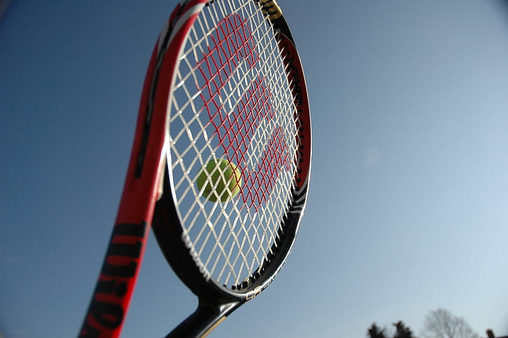

Above is a a Wilson racket, one of the most popular on the pro tour.
Tennis like other sports, has the popular sport brands like Nike and Adidas, but there are other sportswear brands that have made quite a dent in the industry as well. The most popular sports brand in tennis is Nike by far, creating apparel like tennis shirts, shorts, shoes and accessories like headbands for players like Rafael Nadal and Serena Williams, both former world number ones.
For rackets, there are a lot of options, but players tend to go for either Wilson, Babolat, Yonex, or Head. These are the 4 most common manufacturer of rackets that players use. Wilson is the most popular brand out of the 4, also known for their footballs and basketballs as they are also the manufacturers of the NFL and the NBA game balls.
The tennis player who makes the most out of brand deals and sponsorships is Roger Federer. He has contracts with huge corporations like Uniqlo and Rolex that make him one of the richest sports stars in the world. In 2021, he made a whopping $106 million. For perspective, starts like Cristiana Ronaldo made $105 million, Lionel Messi made $103 million, and Lebron James made $88.2 million. Federer had a contract with Nike prior to his deal with Uniqlo but after it ended, he signed a contract that would earn him $300 million dollars during the 10 years his contract was valid. His deal with Rolex also makes him a staggering amount, amounting to nearly $15 million.
There is rather a lot of money in the sport, making players millionaires and the sport stressful, as winning matches could make or break careers.